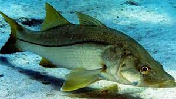

Robalo:
Robalo é um peixe de água salgada do reino Animalia. O nome científico dele é Centropomus undecimalis e possui vários nomes populares para especificar os tipos de robalo, a depender do lugar.
Descrição:
Possuem um corpo prateado e nadadeiras com cores que variam conforme as espécies, sendo mais comuns os tons de amarelo, vermelho e preto.
Pesca:
A pesca de Lambari deve ser feita com a utilização de materiais leves, isto é, você não deve usar os equipamentos pesados.
| Robalo |
|  |
| Tamanho: 1,2 m Peso: 5 kg |
Para contratação: Chssilva1419@gmail.com